Bagel Gourmet Cafe, known for its delicious breakfast sandwiches, lacked an online presence that matched the quality of its offerings. The existing website suffered from usability issues, including poor accessibility, responsiveness, and visual design, hindering user engagement and potentially driving away customers.
Conducting an analysis of the website revealed key points:
Thus, conducting research to find the ideal website layout that would increase the online presence was essential.
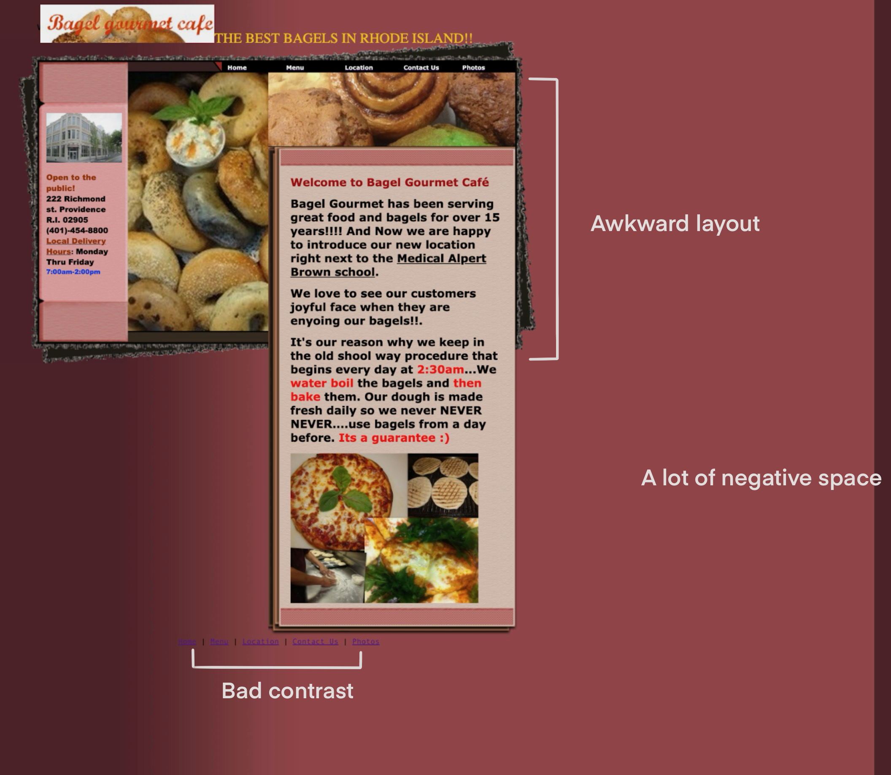Through a thorough examination and the aid of accessibility tools like WAVE, I was able to pinpoint critical issues undermining the user experience.
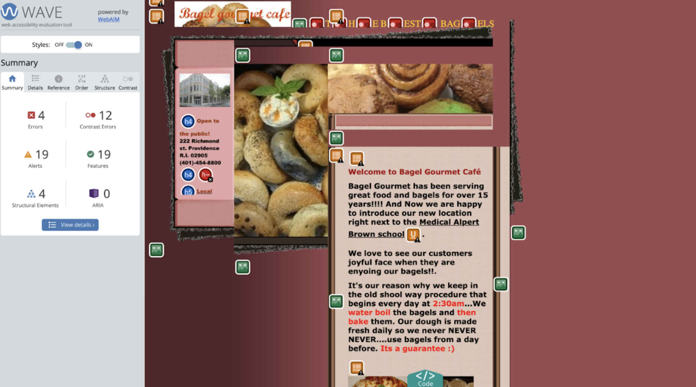Employing speed sketching and low-fidelity wireframing techniques, I explored various design possibilities while addressing identified problems.
Speed Sketching
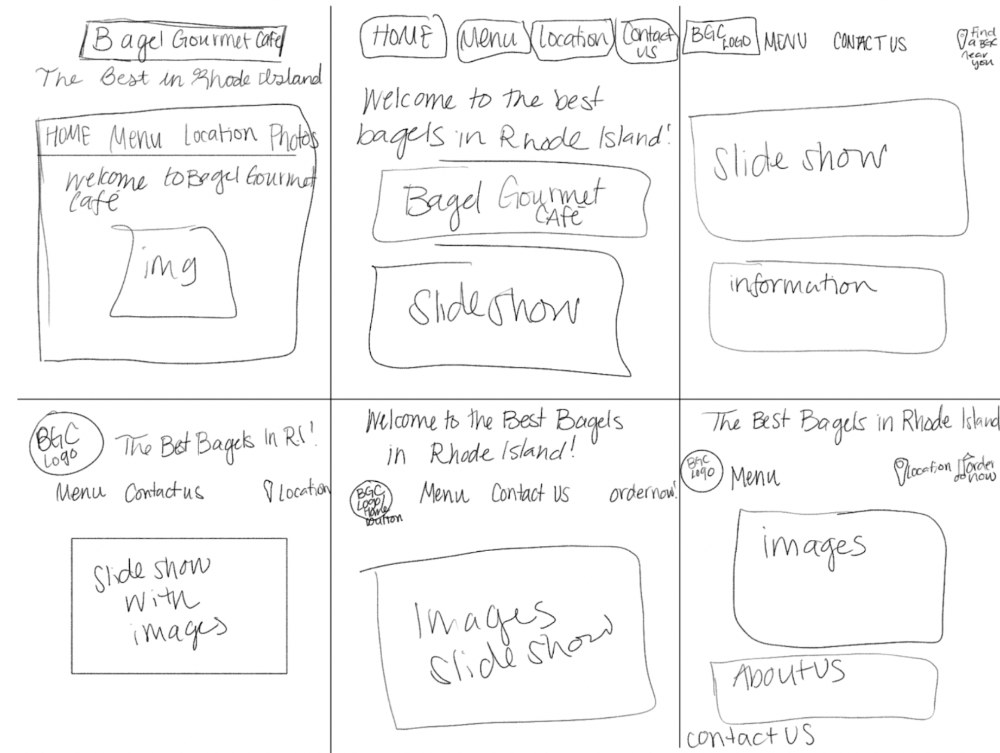 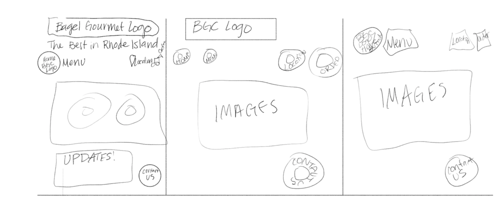Final Sketch
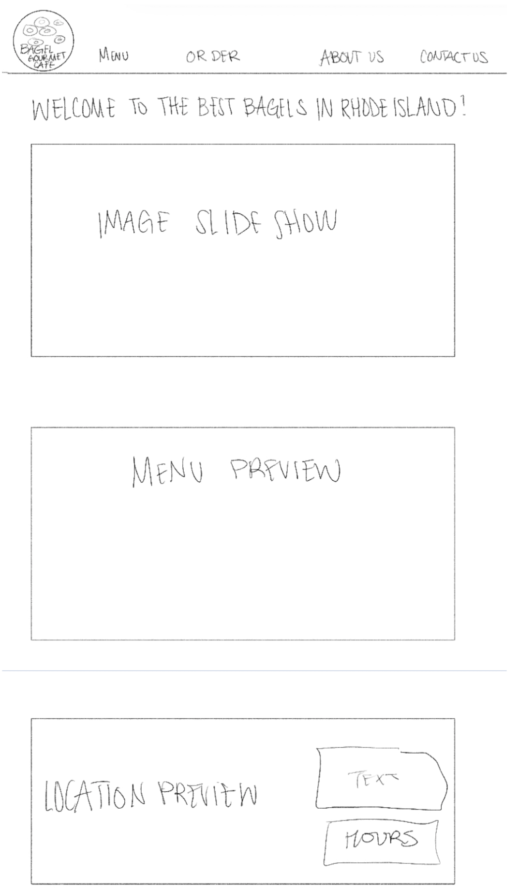Low-Fidelity Wireframing
Mobile:
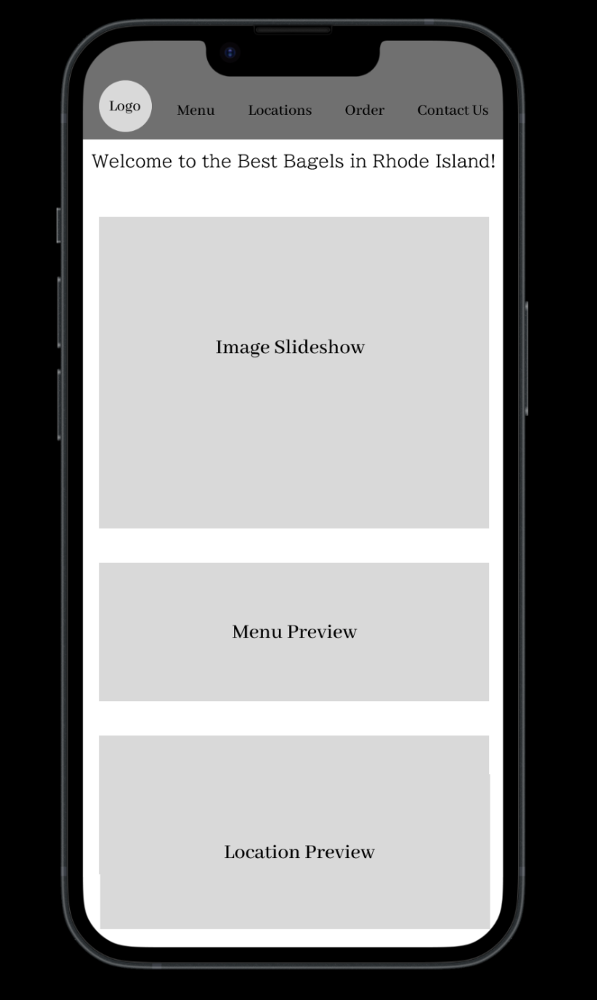Tablet:
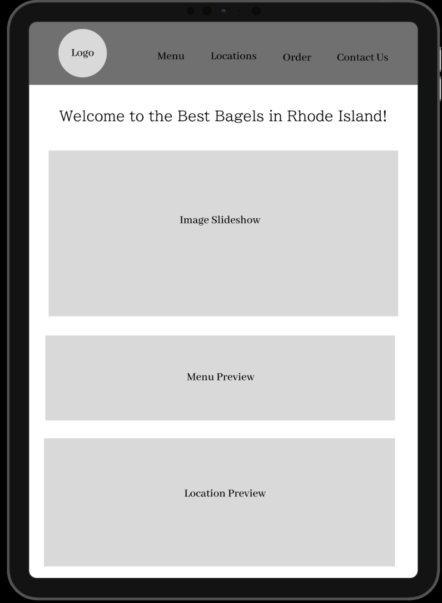Desktop:
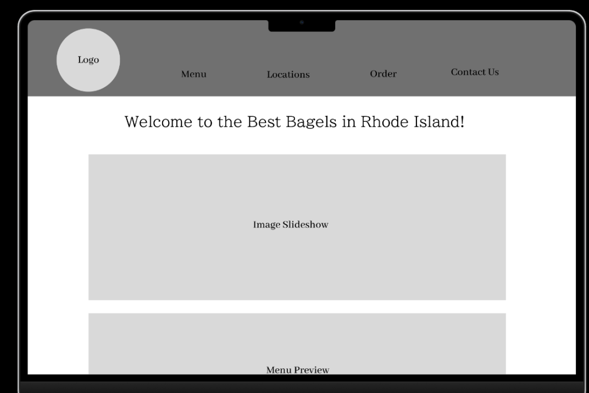 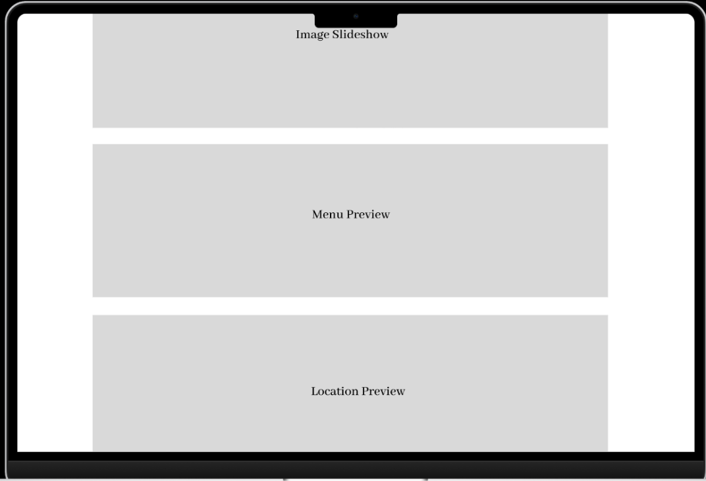With each iteration, I iteratively refined the designs, balancing aesthetics with usability and ensuring responsiveness across different devices.
Prioritizing accessibility, I enhanced color contrast, added alt text for images, and optimized navigation for screen readers.
Mobile Redesign: The redesigned mobile interface prominently displays key information, ensuring effortless navigation on smaller screens. It also has a clear hierarchy and improved contrast to enhance readability and accessibility.
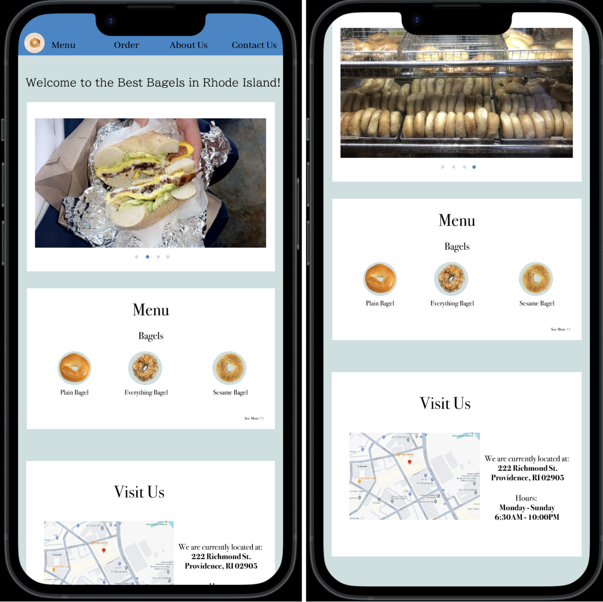Tablet Adaptation: Adapting the design for tablets maintains consistency while optimizing layout for larger screens. Also, key elements remain accessible, maintaining a seamless user experience.
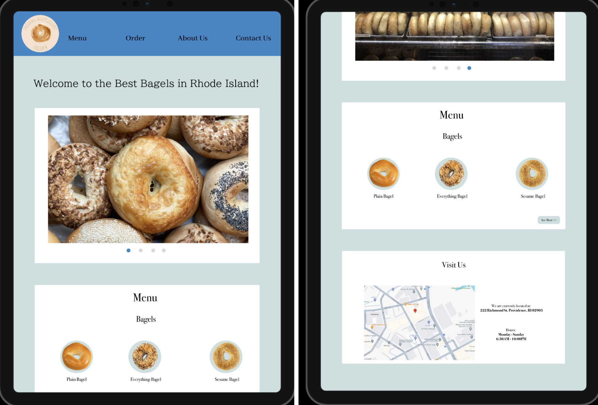Desktop Experience: The desktop version features a clean layout with intuitive navigation, providing users with easy access to menu items, location details, and online ordering
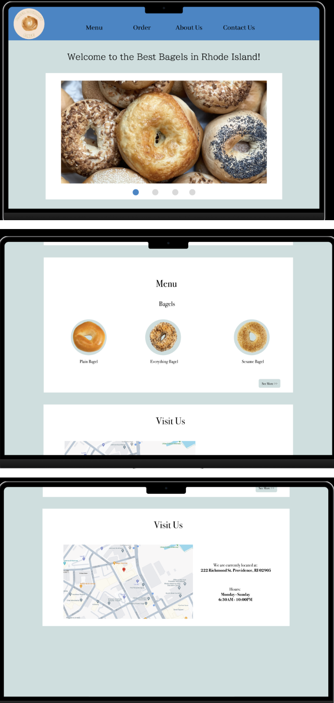The responsive redesign of Bagel Gourmet Cafe's website has resulted in enhanced accessibility, making the website inclusive for users of all abilities.
Through this project, I learned a lot about prioritizing user needs and accessibility is essential in designing a successful website. It is very important to keep in mind who is using the website. Lastly, I learned that the flow of a website is really important, as it can set the tone for your entire webpage.
>The journey of redesigning Bagel Gourmet Cafe's website exemplifies the transformative power of user-centered design. By addressing usability issues and prioritizing accessibility, we can enhance the online presence of a website and overall improve the customer experience.